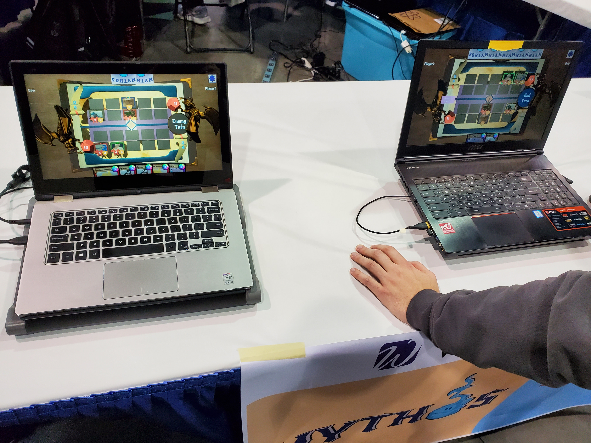
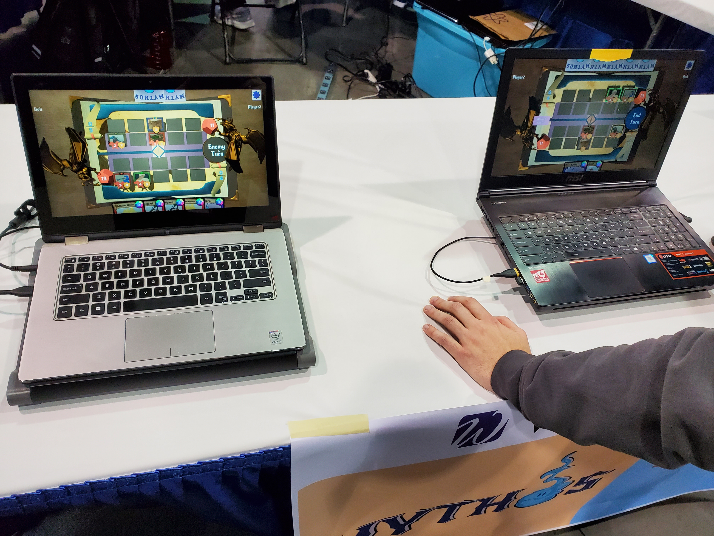
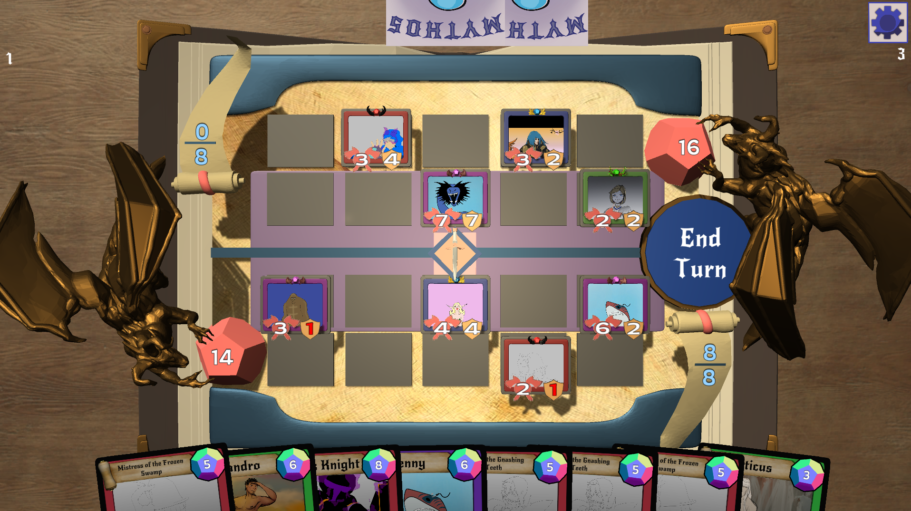

Mythos
Mythos is a competitive CCG (Collective Card Game) where you forge your own decks to battle against another valiant opponent for the ultimate goal of claiming victory! Grab your friends and play today!
Mythos was created during my second capstone, MAGD 488, where I was the Project Lead and Head Programmer. It was my job to ensure that all programmers were able to get their work done, as well as collaborate with all other teams. The Mythos group was split up into Programmers, Artists, Narrative/Story Writers, Marketing, and Design. Our team was built with 14 people.
While my job was to essentially be the Programming Manager, a mixture of confusion due to the class structure and a lack of work between most programmers resulted in myself and one other programmer to do the vast majority of the job. I definitely made many mistakes along the way, and while I cannot blame myself for the lack of work, I can blame myself for not motivating and bringing everyone together fast enough, as most of the game was built in less than 3 weeks.
Mythos was built with the vision of being able to go through matchmaking. We have our very own built server which allows for several games at a time through a network. You are able to go against random opponents within our system, and we also have a ranking system which determines who you go up against.
My Contributions were essentially the entirety of the gameplay itself, as well as helping with "plugging in" the server to allow information to be sent. I did not make the server itself. Having said that, this was by far the biggest project that I have ever worked on, and while it had its ups and downs, I am very proud of how far we came.
This game was submitted to the MAGD Expo in 2020, where it won Best in Show!
Engine: Unity
Software Used: Visual Studio
Languages: C#
Timeframe: 4 Months
Status: Complete
Download here!
How to Play
If you have ever played Magic the Gathering, Hearthstone, or any other CCG, a lot of the terms that I use will be the same.
Each player starts with 20 health and 0 mana. A player is randomly selected to go first; that player will draw 3 cards, and the other will draw 4.
On each player's turn, their maximum mana will increase by 1 until it reaches 10. For instance, on turn 1, you will have only 1 mana to use. On turn 4, you will have 4. Mana is a resouce that both players will use to cast their cards.
Your goal is to deplete the opponent's life total to 0. You do this by dealing damage to the opponent through creature cards in combat, abilities, or artifacts.
When a creature is played, it may attack the player or any of their creatures/artifacts once per turn. If it is a melee creature, it cannot hit the player unless there are no creatures in front of it. If it is a ranged creature, it can attack the player so long as there is no ranged creature on the opposite side in the same column. Mythos is a combination of a battle simulator and card game. The big creatures go in the front to defend the backline, and the backline is shooting across the battlefied.
Each player starts with 20 health and 0 mana. A player is randomly selected to go first; that player will draw 3 cards, and the other will draw 4.
On each player's turn, their maximum mana will increase by 1 until it reaches 10. For instance, on turn 1, you will have only 1 mana to use. On turn 4, you will have 4. Mana is a resouce that both players will use to cast their cards.
Your goal is to deplete the opponent's life total to 0. You do this by dealing damage to the opponent through creature cards in combat, abilities, or artifacts.
When a creature is played, it may attack the player or any of their creatures/artifacts once per turn. If it is a melee creature, it cannot hit the player unless there are no creatures in front of it. If it is a ranged creature, it can attack the player so long as there is no ranged creature on the opposite side in the same column. Mythos is a combination of a battle simulator and card game. The big creatures go in the front to defend the backline, and the backline is shooting across the battlefied.
My Contributions
The Battlefield

Starting with what many CCGs would call "the battlefield" or "the board," we designed the game to have 10 tiles that you can place your cards on. The reason is that in Mythos, there are melee and ranged cards. You may have up to 5 melee and 5 ranged creatures at any given time.
To make this required a lot of organization. As seen in the picture below, there are cards in the player's hand and the board. We needed to decide what to call each of the game's components inside and outside the code. We decided on this: the objects in the player's hands were called "cards," and the objects on the board were called "tokens," which were placed on "tiles."
The act of placing a card required information to be sent to both players. The host of the lobby would emit the information to both players, regardless of who initated an event. If a card was placed by the client, not the host, the client would tell the host that a card needs to be placed. Then, the host would emit that information to itself and back to the client.
Placing a token on the board, as well as attacking, all had their own animations that I created through coroutines. The compass in the middle of the screen showed whose turn it was. I would turn the compass through a coroutine whenever a turn has ended.
Combat
Arguably the biggest part of Mythos, being able to attack with creatures would decide whether or not you win the game. Going back to what I talked about with tokens, the tokens on the board were children of the tiles that they were placed on. This was my decision as I wanted to have full access to the tiles, including if I needed to animate them, change their color, or affect their token.
 This screenshot shows a very early edition of Mythos where certain tiles would turn green depending on the situation. In here, a melee creature is trying to attack another token,
and since it is melee, it cannot attack the creature in the back row, so all other creature's tiles would turn green to indicate which ones could be attacked.
This screenshot shows a very early edition of Mythos where certain tiles would turn green depending on the situation. In here, a melee creature is trying to attack another token,
and since it is melee, it cannot attack the creature in the back row, so all other creature's tiles would turn green to indicate which ones could be attacked. With the new board, I opted to change the material color of the tokens themselves since the tiles could not be seen with a token on top of it. Similar to placing a token, attacking with a token is also information that needs to be sent to both players. The tokens would hold onto their own health and attack value. When a token attacks another token, I would call a function to go through a server RPC that would tell both players which token is the attacker, and which token is the victim. Same goes for when a token attacks a player.

Abilities / Attributes
Similar to other CCGs, Mythos has its own selection of cards with abilites and cards with what we call "Attributes."
An attribute can be compared to other mechanics in CCGs like "haste," or "lifesteal." These are static mechanics that are shared among many creatures. However, our attributes are unique due to having a two row board. So, we have attributes like Pierce where a creature will deal damage to both the creature it attacks and the creature behind it.
Our creatures were created in scriptable objects which holds onto all information about the creature, including its health, its attributes, its abilities, and its attack damage. The Toke (not the scriptable object) will hold onto said scriptable object, but when it takes damage, it does not reduce the scriptable object health value, but the token value instead. The scriptable objects also hold onto the abilities and attributes of each creature. We have several override functions for OnAttack, OnPlay, OnDeath, etc. When a token attacks, it grabs the function from the scriptable object and calls it.

MGC 2022
Mythos was shown at the Milwaukee Gaming Classic in early 2022.
 

Various Pictures
